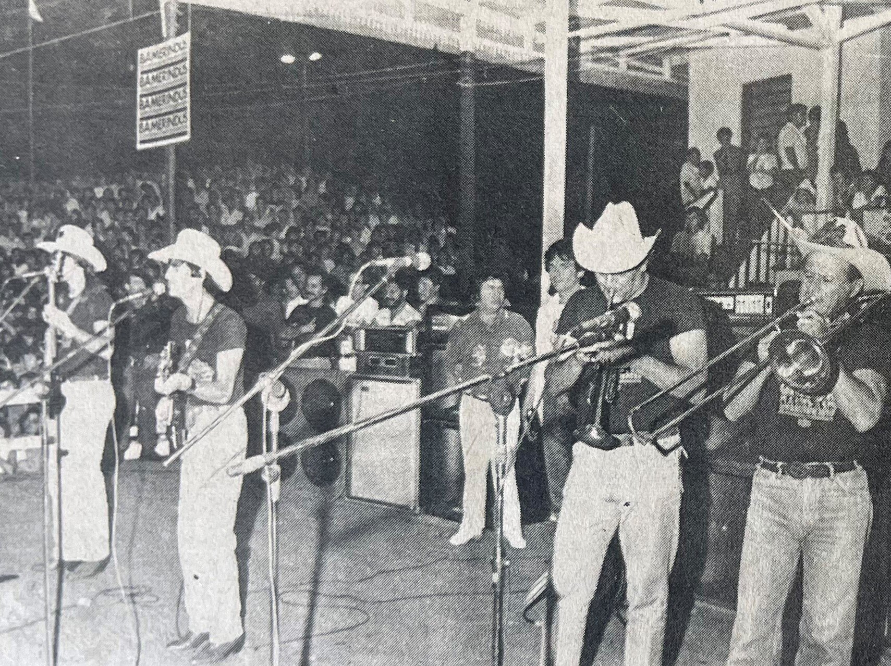

A Expoingá (Exposição Feira Agropecuária, Comercial e Industrial de Maringá) é um dos maiores e mais tradicionais eventos agropecuários do Brasil. Sua origem remonta a 1972, quando foi realizada a primeira grande exposição agropecuária e industrial de Maringá, inicialmente denominada Expofemar (Exposição Feira Agropecuária e Industrial de Maringá) .
A Expoingá é uma das maiores feiras agropecuárias e comerciais do sul do Brasil, realizada anualmente em Maringá (PR). O evento reúne exposições de animais, leilões, shows, rodeios, espaços gastronômicos e pavilhões com empresas de diversos setores. Além de promover o agronegócio, também movimenta o turismo, a economia local e oferece atrações culturais e educativas para toda a família.